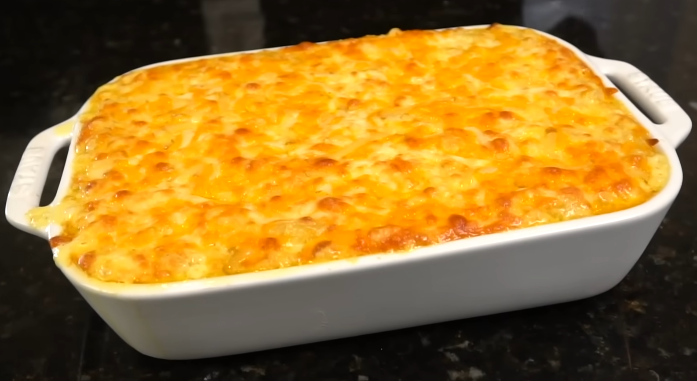

5 Cheese Mac & Cheese

Description
Mac & Cheese is arguably the greatest side dish ever invented... especially in the South! Here is a recipe for making this classic with 5 different cheeses - baked to perfection! This recipe deserves a spot on your dinner table ASAP!
Ingredients
- 1 lb elbow macaroni noodles
- 1-2 tbsps sweet condensed milk (optional)
- 8 oz shredded mozzarella cheese
- 8 oz mild cheddar cheese
- 4-6 oz havarti cheese
- 4 oz parmesan cheese
- 4 oz smoked gouda cheese
- 2 cups half and half
- 1 cup heavy cream
- 1- 2 tbsps all purpose flour (the more you use, the thicker the consistency will be)
- 1/2 stick of butter
- 2 tbsps sour cream
- salt, pepper, garlic, onion powder, cajun seasoning
- 1/2 water and 1/2 chicken broth (to boil noodles)
Steps
Source
Return to Homepage